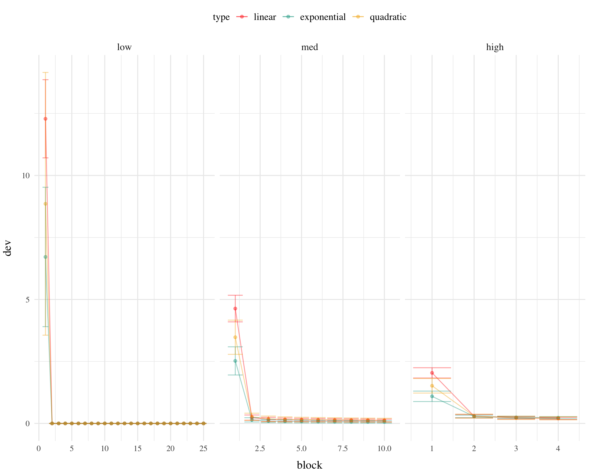
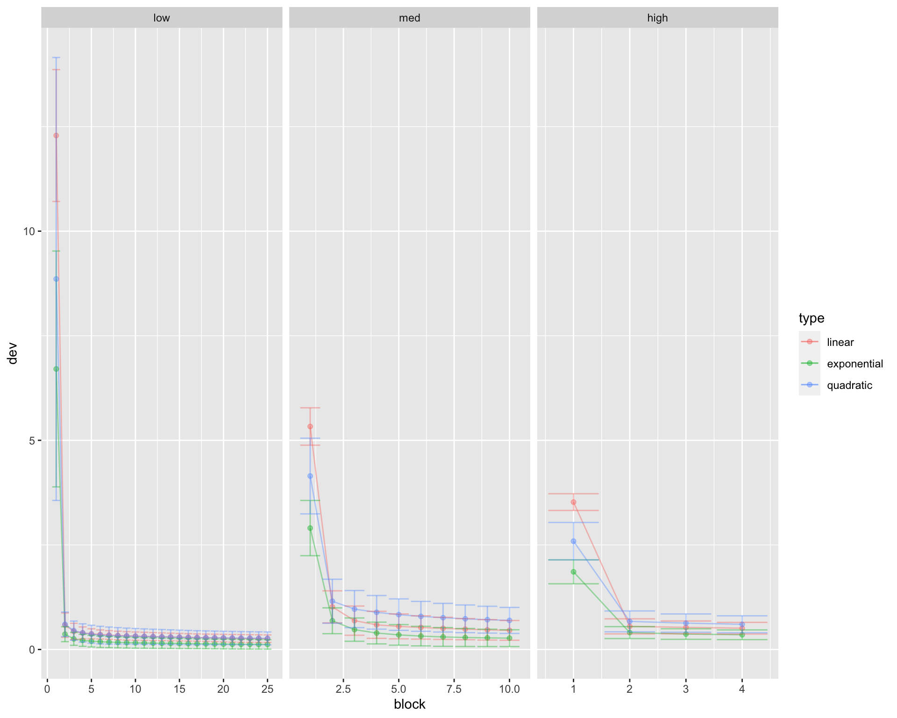
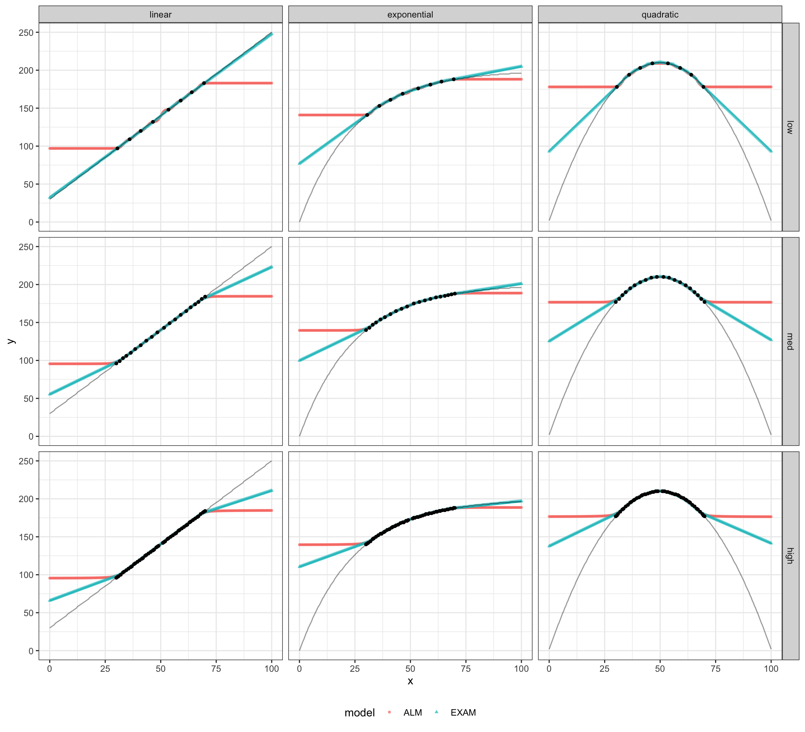

Code
#lapply(c('tidyverse','data.table','igraph','ggraph','kableExtra'),library,character.only=TRUE))
pacman::p_load(tidyverse,data.table,igraph,ggraph,kableExtra, patchwork) #lapply(c('tidyverse','data.table','igraph','ggraph','kableExtra'),library,character.only=TRUE))
pacman::p_load(tidyverse,data.table,igraph,ggraph,kableExtra, patchwork) #https://nrennie.rbind.io/blog/2022-06-06-creating-flowcharts-with-ggplot2/
inNodes <- seq(1,6,1) %>% as.integer()
outNodes <- seq(300,1000,50)%>% as.integer()
stim <- "Stim"
resp <- "Response"
inFlow <- tibble(expand.grid(from=stim,to=inNodes)) %>% mutate_all(as.character)
outFlow <- tibble(expand.grid(from=outNodes,to=resp)) %>% mutate_all(as.character)
gd <- tibble(expand.grid(from=inNodes,to=outNodes)) %>% mutate_all(as.character) %>%
rbind(inFlow,.) %>% rbind(.,outFlow)
g = graph_from_data_frame(gd,directed=TRUE)
coords2=layout_as_tree(g)
colnames(coords2)=c("y","x")
odf <- as_tibble(coords2) %>%
mutate(label=vertex_attr(g,"name"),
type=c("stim",rep("Input",length(inNodes)),rep("Output",length(outNodes)),"Resp"),
x=x*-1) %>%
mutate(y=ifelse(type=="Resp",0,y),xmin=x-.05,xmax=x+.05,ymin=y-.35,ymax=y+.35)
plot_edges = gd %>% mutate(id=row_number()) %>%
pivot_longer(cols=c("from","to"),names_to="s_e",values_to=("label")) %>%
mutate(label=as.character(label)) %>%
group_by(id) %>%
mutate(weight=sqrt(rnorm(1,mean=0,sd=10)^2)/10) %>%
left_join(odf,by="label") %>%
mutate(xmin=xmin+.02,xmax=xmax-.02)
ggplot() + geom_rect(data = odf,
mapping = aes(xmin = xmin, ymin = ymin,
xmax = xmax, ymax = ymax,
fill = type, colour = type),alpha = 0.5) +
geom_text(data=odf,aes(x=x,y=y,label=label,size=3)) +
geom_path(data=plot_edges,mapping=aes(x=x,y=y,group=id,alpha=weight)) +
# geom_rect(aes(xmin=-1.05,xmax=-.95,ymin=-10,ymax=5),color="red",alpha=.1)+
# geom_rect(aes(xmin=-0.05,xmax=.05,ymin=-10,ymax=5),color="blue",alpha=.1) +
theme_void()
\[ a_i(X)=\exp \left|-\gamma \cdot\left[X-X_i\right]^2\right| \]
\[ o_j(X)=\Sigma_{i=1, M} w_{j i} \cdot a_i(X) \]
\[ P\left[Y_j \mid X\right]=o_j(X) / \Sigma_{k=1, L} o_k(X) \]
\[ m(X)=\Sigma_{j=1, L} Y_j \cdot P\left[Y_j \mid X\right] \]
alm.response <- function(input=1,c) {
input.activation <- exp(-c*(input.layer - input)^2)
input.activation <<- input.activation/sum(input.activation)
#print(length(input.activation)); print(dim(weight.mat))
output.activation <<- weight.mat %*% input.activation
output.probability <<- output.activation/sum(output.activation)
mean.response <<- sum(output.layer * output.probability)
mean.response
}
alm.update <- function(corResp,c,lr){
fz <- exp(-c*(output.layer - corResp)^2)
teacherSignal <- (fz - output.activation)*lr
#print(length(teacherSignal)); print(length(fz))
wChange <- teacherSignal %*% t(input.activation)
weight.mat <<- weight.mat + (wChange)
weight.mat[weight.mat<0]=0 # prevent negative values
# weight.mat[weight.mat>1]=1
weight.mat <<- weight.mat
}
alm.trial <- function(input, corResp,c,lr){
alm.response(input,c)
alm.update(corResp,c,lr)
# print(paste0("input=",input,"; corResp=",corResp,"; mean.response=",mean.response))
mean.response
}\[ f_j(Z)=e^{-c\cdot(Z-Y_j)^2} \]
\[ w_{ji}(t+1)=w_{ji}(t)+\alpha \cdot {f_i(Z(t))-O_j(X(t))} \cdot a_i(X(t)) \]
exam.response <- function(input,c){
# Find the index of the input node with the highest activation
trainVec = sort(unique(xt))
nearestTrain <- trainVec[which.min(abs(input - trainVec))]
aresp <- alm.response(nearestTrain,c)
#max.index <- which.max(input.activation)
xUnder = ifelse(min(trainVec) == nearestTrain, nearestTrain, trainVec[which(trainVec == nearestTrain) - 1])
xOver = ifelse(max(trainVec) == nearestTrain, nearestTrain, trainVec[which(trainVec == nearestTrain) + 1])
mUnder <- alm.response(xUnder,c)
mOver <- alm.response(xOver,c)
exam.output = round(aresp + ((mOver - mUnder) / (xOver - xUnder)) * (input - nearestTrain), 3)
# Determine the input nodes and associated weights for computing the slope
exam.output
}\[ P[X_i|X] = \frac{a_i(X)}{\\sum_{k=1}^Ma_k(X)} \]
\[ E[Y|X_i]=m(X_i) + \bigg[\frac{m(X_{i+1})-m(X_{i-1})}{X_{i+1} - X_{i-1}} \bigg]\cdot[X-X_i] \]
# function to generate data, from either linear, exponential, quadratic or sinusoidal functions
generate.data <- function(x, type = "linear", noise = NA) {
if (type == "linear") {
y <- round(2.2*x + 30,0)
}
else if (type == "exponential") {
y <- round(200*(1-exp(-x/25)),0)
}
else if (type == "sinusoidal") {
y <- sin(2 * pi * x)
}
else if (type == "quadratic") {
y <- round(210 - ((x-50)^2)/12,0)
}
else {
stop("type must be linear, exponential, quadratic, or sinusoidal")
}
# if noise is specified, add noise to the y values
if(!is.na(noise)) {
y <- y + round(rnorm(length(y), 0, noise),2)
}
data.frame(x, y,type)
}
envTypes <- c("linear", "exponential", "quadratic")
lowDensityTrainBlock <- c(30.5, 36.0, 41.0, 46.5, 53.5, 59.0, 64.0, 69.5)
medDensityTrainBlock <- c(
30.0, 31.5, 33.0, 34.5, 36.5, 38.5, 41.0, 43.5, 46.0,
48.5, 51.5, 54.0, 56.5, 59.0, 61.5, 63.5, 65.5, 67.0, 68.5, 70.0
)
highDensityTrainBlock <- c(
30.0, 30.5, 31.0, 32.0, 33.0, 33.5, 34.5, 35.5,
36.5, 37.0, 38.0, 38.5, 39.5, 40.5, 41.5, 42.0, 43.0,
43.5, 44.5, 45.5, 46.5, 47.0, 48.0, 48.5, 49.0, 51.0, 51.5, 52.0,
53.0, 53.5, 54.5, 55.5, 56.5, 57.0, 58.0, 58.5, 59.5, 60.5, 61.5,
62.0, 63.0,63.5, 64.5, 65.5, 66.5, 67.0, 68.0, 69.0, 69.5, 70.0
)
# all density conditions have the same # of training trials, but differ in the # of repetitions per items, or blocks, low density has 25 training blocks, medium has 10 blocks, high has 4 blocks.
# generate training data, for each combination of environment type and density. Use purrr map functions. Rep each dataset by its number of blocks.
lowTrain <- map_dfr(envTypes, ~ generate.data(rep(lowDensityTrainBlock,25), type = .x)) %>% group_by(type) %>% mutate(block = rep(1:25, each = 8),trial=seq(1,200))
medTrain <- map_dfr(envTypes, ~ generate.data(rep(medDensityTrainBlock,10), type = .x)) %>% group_by(type) %>% mutate(block = rep(1:10, each = 20),trial=seq(1,200))
highTrain <- map_dfr(envTypes, ~ generate.data(rep(highDensityTrainBlock,4), type = .x)) %>% group_by(type) %>% mutate(block = rep(1:4, each = 50),trial=seq(1,200))
# nTrainExamples <- 10
# trainLowBound <-20; trainHIghBound <- 80
# nBlock <- 5 # number of times each training example is presented
# sample training data from function, nTrainExamples., between trainLowBound and trainHIghBound
# xt <- runif(nTrainExamples, trainLowBound, trainHIghBound)
# trainVec <- rep(xt, nBlock)source(here::here("Functions","deLosh_data.R"))
linear_function <- function(x) 2.2 * x + 30
exponential_function <- function(x) 200 * (1 - exp(-x/25))
quadratic_function <- function(x) 210 - (x - 50)^2 / 12
linear_plot <- ggplot(deLosh_data$human_data_linear, aes(x, y)) +
geom_point(shape=1) + stat_function(fun = linear_function, color = "black") +
labs(y="Response Magnitude", title="Linear Function")
exponential_plot <- ggplot(deLosh_data$human_data_exp, aes(x, y)) +
geom_point(shape=1) + stat_function(fun = exponential_function, color = "black")+
labs(x="Stimulus Magnitude", title="Exponential Function")
quadratic_plot <- ggplot(deLosh_data$human_data_quad, aes(x = x, y = y)) +
geom_point(aes(shape = "Observed", color = "Observed"), shape = 1) +
stat_function(aes(color = "True Function"), fun = quadratic_function, geom = "line") +
labs(title="Quadratic Function") +
scale_shape_manual(values = c(1)) +
scale_color_manual(values = c("Observed" = "black", "True Function" = "black")) +
theme(legend.title = element_blank()) +
guides(color = guide_legend(override.aes = list(shape = c(1, NA),
linetype = c(0, 1))))
linear_plot + exponential_plot + quadratic_plot# Load required libraries
# Define the true functions
linear_function <- function(x) 2.2 * x + 30
exponential_function <- function(x) 200 * (1 - exp(-x/25))
quadratic_function <- function(x) 210 - (x - 50)^2 / 12
sigmoid <- function(x, scale=1) {
1 / (1 + exp(-scale * x))
}
inflection_function <- function(x, mid_point, steepness) {
# Sigmoid-based function for a controlled inflection
return(1 / (1 + exp(-steepness * (x - mid_point))))
}
create_human_data <- function(func_name, range){
x_values <- seq(range[1], range[2], by = 1)
if (func_name == "linear"){
y_values <- linear_function(x_values)
} else if (func_name == "exponential") {
y_values <- exponential_function(x_values)
} else if (func_name == "quadratic") {
y_values <- quadratic_function(x_values)
}
# Adjust y_values based on patterns
if (func_name == "linear"){
y_values[x_values < 30] <- y_values[x_values < 30] * 0.9
y_values[x_values > 70] <- y_values[x_values > 70] * 0.9
} else {
y_values[x_values < 30] <- y_values[x_values < 30] * 1.1
y_values[x_values > 70] <- y_values[x_values > 70] * 1.1
}
return(data.frame(x = x_values, y = y_values))
}
# Create data frames for each function using the modified function
linear_data <- create_human_data("linear", c(0, 100))
exponential_data <- create_human_data("exponential", c(0, 100))
quadratic_data <- create_human_data("quadratic", c(0, 100))
# Plot using ggplot2
plot_function <- function(data, true_function, title){
ggplot(data, aes(x, y)) +
geom_point() +
geom_line(aes(x, y = true_function(x))) +
labs(title = title, x = "Stimulus Magnitude", y = "Response Magnitude") +
theme_minimal() +
ylim(0, 250)
}
linear_plot <- plot_function(linear_data, linear_function, "Linear")
exponential_plot <- plot_function(exponential_data, exponential_function, "Exponential")
quadratic_plot <- plot_function(quadratic_data, quadratic_function, "Quadratic")
# Arrange the plots side by side
gridExtra::grid.arrange(linear_plot, exponential_plot, quadratic_plot, ncol = 3)
# simulation function
alm.sim <- function(dat, c, lr,testRange=seq(0,100,.5)){
input.layer <<- matrix(seq(0,100,.5) ) # half step units for inputs, from 0 to 100
output.layer <<- matrix(seq(0,250,1)) # single step units for outputs, from 0 to 250
weight.mat <<- matrix(0.0000000,nrow=length(output.layer),ncol=length(input.layer )) # weights initialized to 0 (as in Delosh 1997)
xt<<-dat$x
# run training
st <- map2_dbl(dat$x, dat$y, ~alm.trial(.x,.y,c,lr))
# append training data to the data frame
dat <- dat %>% mutate(almResp = st)
return(list(d=dat,wm=weight.mat,c=c,lr=lr)) # final weightmat is probs incorrect for all but last
}
simOrganize <- function(simOut){
dat <- simOut$d
weight.mat <<- simOut$wm
c <- simOut$c
lr <- simOut$lr
trainX <- unique(dat$x)
xt <<- trainX
almResp <- generate.data(seq(0,100,.5), type = first(dat$type)) %>% rowwise() %>%
mutate(model="ALM",resp = alm.response(x,c))
examResp <- generate.data(seq(0,100,.5), type = first(dat$type)) %>% rowwise() %>%
mutate(model="EXAM",resp = exam.response(x,c))
bind_rows(almResp,examResp) %>%
mutate(type=first(dat$type),
c=c,lr=lr,
type=factor(type,levels=c("linear","exponential","quadratic"))) %>%
# compute test_region, equal to "train" if x is within trainX, interpolate if within trainX range, else "extrapolate"
mutate(test_region = ifelse(x %in% trainX, "train", ifelse(x > min(trainX) & x < max(trainX), "interpolate", "extrapolate")))
}# split by type, then send each training dataset to simulation function
# orig, c=1.4; l.r=.8
lowSim <- map(envTypes, ~ alm.sim(lowTrain %>% filter(type == .x), c = .2, lr = .2))
medSim <- map(envTypes, ~ alm.sim(medTrain %>% filter(type == .x), c = .2, lr = .2))
highSim <- map(envTypes, ~ alm.sim(highTrain %>% filter(type == .x), c = .2, lr = .2))
simAll <- rbind(bind_rows(lowSim %>% map("d")) %>% mutate(density = "low"),
bind_rows(medSim %>% map("d")) %>% mutate(density = "med"),
bind_rows(highSim %>% map("d")) %>% mutate(density = "high"))
simAll <- simAll %>% mutate(stage=as.numeric(cut(trial,breaks=20,labels=seq(1,20))),
dev=sqrt((y-almResp)^2),
#reorder density factor levels
density=factor(density,levels=c("low","med","high")),
type=factor(type,levels=c("linear","exponential","quadratic"))) %>%
dplyr::relocate(density,type,stage)
simAll %>% ggplot(aes(x=block,y=dev,color=type)) + stat_summary(geom="line",fun=mean,alpha=.4)+
stat_summary(geom="point",fun=mean,alpha=.4)+
stat_summary(geom="errorbar",fun.data=mean_cl_normal,alpha=.4)+facet_wrap(~density, scales="free_x")
Predictions for Generalization
lowSimTest <- map_dfr(lowSim,simOrganize) %>% mutate(density = "low")
medSimTest <- map_dfr(medSim,simOrganize) %>% mutate(density = "med")
highSimTest <- map_dfr(highSim,simOrganize) %>% mutate(density = "high")
simTestAll <- rbind(lowSimTest,medSimTest,highSimTest) %>% group_by(type,density,model) %>%
mutate(type=factor(type,levels=c("linear","exponential","quadratic")),
density=factor(density,levels=c("low","med","high"))) %>%
dplyr::relocate(density,type,test_region)
simTestAll %>% ggplot(aes(x=x,y=y)) +
geom_point(aes(x=x,y=resp,shape=model,color=model),alpha=.7,size=1) +
geom_line(aes(x=x,y=y),alpha=.4)+
#geom_point(aes(x=x,y=y,color=test_region),alpha=.2)+
geom_point(data=simTestAll %>% filter(test_region=="train"),aes(x=x,y=y),color="black",size=1,alpha=1) +
# geom_point(data=simTestAll %>% filter(test_region %in% c("interpolate","extrapolate")),aes(x=x,y=y,color=test_region),alpha=.6) +
# geom_point(data=simTestAll %>% filter(test_region=="extrapolate"),aes(x=x,y=y),color="purple",alpha=.3) +
facet_grid(density~type) +
theme_bw() + theme(legend.position="bottom")
#lowSimTest %>% filter(model=="EXAM" & type=="linear")
#rm(list= ls()[sapply(ls(), function(x) class(get(x))) != 'function'])
#rm(weight.mat,input.activation,output.probability,output.activation,mean.response,xt)
#
# simAll %>% ggplot(aes(x=block,y=dev)) + stat_summary(geom="line",fun=mean,alpha=.3)+stat_summary(geom="point",fun=mean)+
# stat_summary(geom="errorbar",fun.data=mean_cl_normal)+facet_wrap(density~type, scales="free_x")Collpasing Across Density Levels gives us:
simTestAll %>% group_by(type,model,x,y) %>% summarise(resp=mean(resp)) %>% ggplot(aes(x=x,y=y)) +
geom_point(aes(x=x,y=resp,shape=model,color=model),alpha=.7,size=1) +
geom_line(aes(x=x,y=y),alpha=.4)+
facet_grid(~type) +
theme_bw() + theme(legend.position="bottom")# Function that goes through every step of generating data, simulating training, and simulating generalization
full.sim <- function(c,lr,noise)
{
envTypes <- c("linear", "exponential", "quadratic")
lowDensityTrainBlock <- c(30.5, 36.0, 41.0, 46.5, 53.5, 59.0, 64.0, 69.5)
medDensityTrainBlock <- c(
30.0, 31.5, 33.0, 34.5, 36.5, 38.5, 41.0, 43.5, 46.0,
48.5, 51.5, 54.0, 56.5, 59.0, 61.5, 63.5, 65.5, 67.0, 68.5, 70.0
)
highDensityTrainBlock <- c(
30.0, 30.5, 31.0, 32.0, 33.0, 33.5, 34.5, 35.5,
36.5, 37.0, 38.0, 38.5, 39.5, 40.5, 41.5, 42.0, 43.0,
43.5, 44.5, 45.5, 46.5, 47.0, 48.0, 48.5, 49.0, 51.0, 51.5, 52.0,
53.0, 53.5, 54.5, 55.5, 56.5, 57.0, 58.0, 58.5, 59.5, 60.5, 61.5,
62.0, 63.0,63.5, 64.5, 65.5, 66.5, 67.0, 68.0, 69.0, 69.5, 70.0
)
# low density has 25 training blocks, medium has 10 blocks, high has 4 blocks.
# generate training data, for each combination of environment type and density. Use purrr map functions. Rep each dataset by its number of blocks.
lowTrain <- map_dfr(envTypes, ~ generate.data(rep(lowDensityTrainBlock,25), type = .x, noise)) %>% group_by(type) %>% mutate(block = rep(1:25, each = 8),trial=seq(1,200))
medTrain <- map_dfr(envTypes, ~ generate.data(rep(medDensityTrainBlock,10), type = .x, noise)) %>% group_by(type) %>% mutate(block = rep(1:10, each = 20),trial=seq(1,200))
highTrain <- map_dfr(envTypes, ~ generate.data(rep(highDensityTrainBlock,4), type = .x, noise)) %>% group_by(type) %>% mutate(block = rep(1:4, each = 50),trial=seq(1,200))
lowSim <- map(envTypes, ~ alm.sim(lowTrain %>% filter(type == .x), c = 1.4, lr = .4))
medSim <- map(envTypes, ~ alm.sim(medTrain %>% filter(type == .x), c = 1.4, lr = .4))
highSim <- map(envTypes, ~ alm.sim(highTrain %>% filter(type == .x), c = 1.4, lr = .4))
simAll <- rbind(bind_rows(lowSim %>% map("d")) %>% mutate(density = "low"),
bind_rows(medSim %>% map("d")) %>% mutate(density = "med"),
bind_rows(highSim %>% map("d")) %>% mutate(density = "high"))
simAll <- simAll %>% mutate(stage=as.numeric(cut(trial,breaks=20,labels=seq(1,20))),
dev=sqrt((y-almResp)^2),
#reorder density factor levels
density=factor(density,levels=c("low","med","high")),
type=factor(type,levels=c("linear","exponential","quadratic"))) %>%
dplyr::relocate(density,type,stage)
lowSimTest <- map_dfr(lowSim,simOrganize) %>% mutate(density = "low")
medSimTest <- map_dfr(medSim,simOrganize) %>% mutate(density = "med")
highSimTest <- map_dfr(highSim,simOrganize) %>% mutate(density = "high")
simTestAll <- rbind(lowSimTest,medSimTest,highSimTest) %>% group_by(type,density,model) %>%
mutate(type=factor(type,levels=c("linear","exponential","quadratic")),
density=factor(density,levels=c("low","med","high"))) %>%
dplyr::relocate(density,type,test_region)
return(list(simAll=list(simAll),simTestAll=list(simTestAll)))
}k = full.sim(c=1.4,lr=.4,noise=2.0)
k4 = full.sim(c=1.4,lr=.4,noise=4.0)
# run simulation with noise=10, 3 times, average results together.
k10 = map_dfr(1:3, ~ full.sim(c=1.4,lr=.4,noise=10.0)) %>% group_by(type,density,model) %>%
mutate(type=factor(type,levels=c("linear","exponential","quadratic")),
density=factor(density,levels=c("low","med","high"))) %>%
dplyr::relocate(density,type,test_region)
k %>% pluck("simAll") %>% ggplot(aes(x=block,y=dev,color=type)) + stat_summary(geom="line",fun=mean,alpha=.4)+
stat_summary(geom="point",fun=mean,alpha=.4)+
stat_summary(geom="errorbar",fun.data=mean_cl_normal,alpha=.4)+facet_wrap(~density, scales="free_x")
k4 %>% pluck("simAll") %>% ggplot(aes(x=block,y=dev,color=type)) + stat_summary(geom="line",fun=mean,alpha=.4)+
stat_summary(geom="point",fun=mean,alpha=.4)+
stat_summary(geom="errorbar",fun.data=mean_cl_normal,alpha=.4)+facet_wrap(~density, scales="free_x")
k %>% pluck("simTestAll") %>%ggplot(aes(x=x,y=y)) +
geom_point(aes(x=x,y=resp,shape=model,color=model),alpha=.7,size=1) +
geom_line(aes(x=x,y=y),alpha=.4)+
geom_point(data=simTestAll %>% filter(test_region=="train"),aes(x=x,y=y),color="black",size=1,alpha=1) +
facet_grid(density~type) +
theme_bw() + theme(legend.position="bottom")
k4 %>% pluck("simTestAll") %>%ggplot(aes(x=x,y=y)) +
geom_point(aes(x=x,y=resp,shape=model,color=model),alpha=.7,size=1) +
geom_line(aes(x=x,y=y),alpha=.4)+
geom_point(data=simTestAll %>% filter(test_region=="train"),aes(x=x,y=y),color="black",size=1,alpha=1) +
facet_grid(density~type) +
theme_bw() + theme(legend.position="bottom")
k10 %>% pluck("simTestAll") %>%ggplot(aes(x=x,y=y)) +
geom_point(aes(x=x,y=resp,shape=model,color=model),alpha=.7,size=1) +
geom_line(aes(x=x,y=y),alpha=.4)+
geom_point(data=simTestAll %>% filter(test_region=="train"),aes(x=x,y=y),color="black",size=1,alpha=1) +
facet_grid(density~type) +
theme_bw() + theme(legend.position="bottom")# label each each simulation with its density level (low, med, high), then combine all 3
lowSimTest <- lowSimTest %>% mutate(density = "low")
medSimTest <- medSimTest %>% mutate(density = "med")
highSimTest <- highSimTest %>% mutate(density = "high")
simTest <- bind_rows(lowSimTest,medSimTest,highSimTest)
# extract element d from each list, and bind rows, remove Nan's, group by type, mutate new variable "Stage", which is set to first for block 1, last for final block, and middle for all other glocks, pipe to ggplot, plotting y and almResp in different colors, facet by type and stage (only first and last block)
ls2=bind_rows(lowSim %>% map("d")) %>% filter(!is.na(almResp)) %>%
group_by(type) %>%
mutate(stage = ifelse(block == 1, "first", ifelse(block == 25, "last", "middle")),
stage2=cut(trial,breaks=20,labels=seq(1,20)),
dev=sqrt((y-almResp)^2))
ls2 %>% ggplot() + geom_point(aes(x=stage2,y=dev))+facet_grid(~type)
ls2 %>% filter(stage %in% c("first","last")) %>% ggplot() + geom_point(aes(x=x,y=y),color="red",alpha=.3) +
geom_point(aes(x=x,y=almResp),color="blue",alpha=.4)+
facet_grid(type~stage) + theme_bw() + theme(legend.position="bottom")
lowSimTest %>% ggplot() + geom_point(aes(x=x,y=resp,color=model)) + geom_line(aes(x=x,y=y),alpha=.3)+ facet_grid(~type) + theme_bw() + theme(legend.position="bottom")
# make grid of each combination of train dataset and envType
simGrid <- expand.grid(envTypes=envTypes,trainData=c("lowTrain","medTrain","highTrain"))
# map over the grid, for each row of simGrid, filter the training dataset by the envType, and then run the simulation function, and then bind rows of the output data frame.
simOut <- map2(c("lowTrain","medTrain","highTrain"),envTypes, ~ alm.sim(get(.x) %>% filter(type == .y), c = 1.4, lr = .4))
# simOut <- map(c("lowTrain","medTrain","highTrain"), ~ map_dfr(envTypes, ~ alm.sim(get(.) %>% filter(type == .x), c = 1.4, lr = .4) %>% simOrganize))
#
# simOut <- map_dfr(simGrid, ~ alm.sim(get(.x$trainData) %>% filter(type == .x$envTypes), c = 1.4, lr = .4) %>% simOrganize)
#
# for each training dataset in c(lowTrain,medTrain,highTrain), run simulation function, separately for each type, and then bind rows of the output data frame.